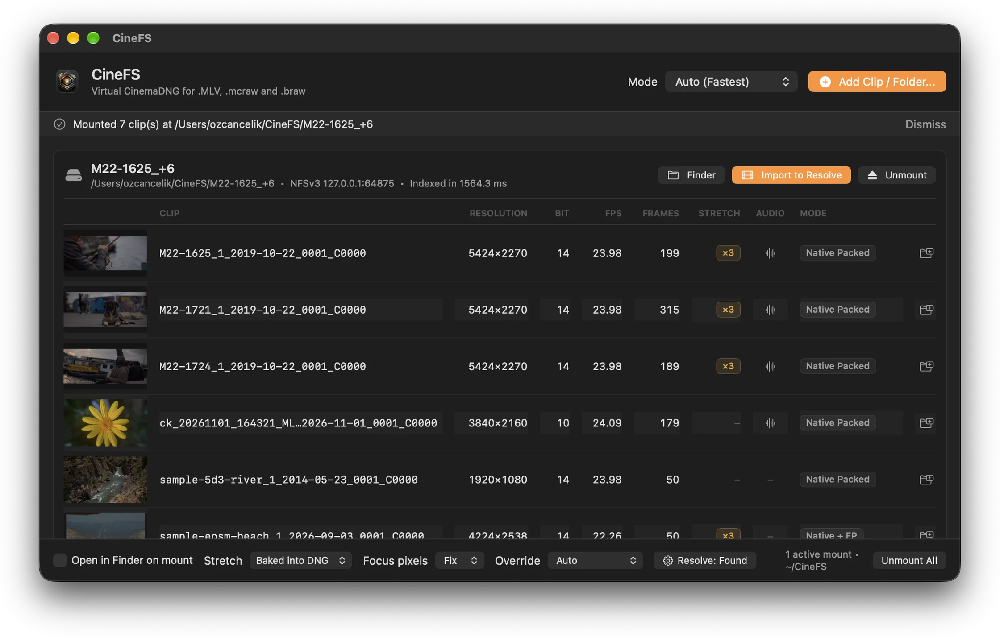
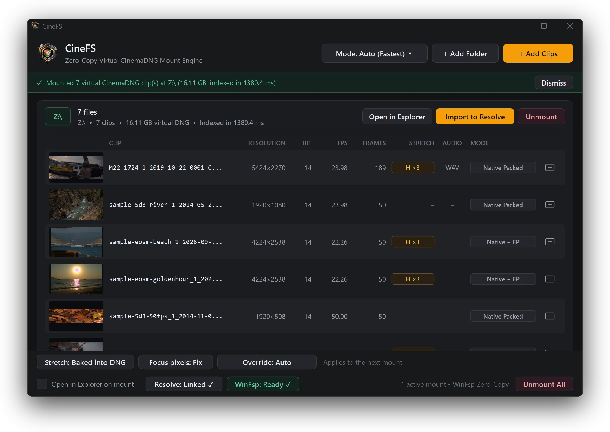
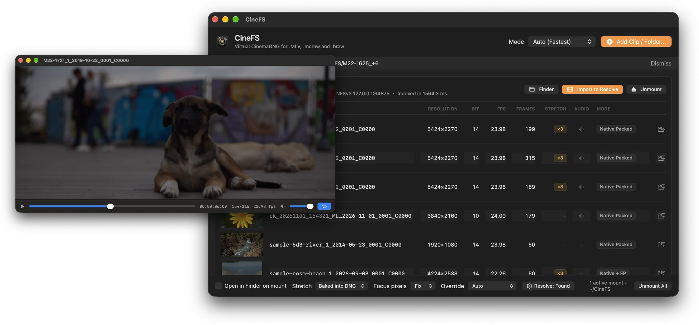
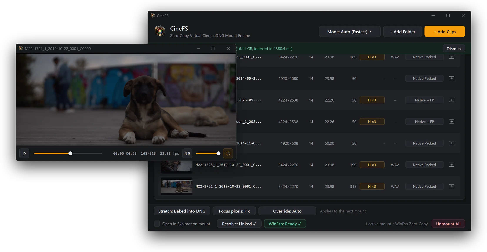

Raw video, mounted as CinemaDNG.
Drop in your .MLV, .mcraw or .braw clips and open them in Resolve, Premiere Pro or After Effects right away.No conversion. No extra disk space.


Skip the export. Keep the disk.
The usual route turns every clip into a second, full-size folder of DNGs before you can cut a frame. CineFS builds each DNG at the moment your editor asks for it, straight from the original file, which is never modified.
Converting first
-
Copy the cardClips land on your drive.
-
Export to DNG and waitEvery frame is decoded and written out again.
-
A second copy of the footageThe DNG folders sit next to the originals.
-
Then start editingImport the exported folders.
With CineFS
-
Copy the cardSame as always.
-
Drop the clips on CineFSA volume (macOS) or drive letter (Windows) appears with one CinemaDNG folder per clip, plus a .wav with timecode.
-
Nothing written to diskFrames are generated on the fly while your editor reads them.
-
Start editing nowImport the folders, or send them to the Resolve Media Pool in one click.
Example clip: 2,088 frames at about 1.6 MB per DNG frame.
Watch a clip before it hits the timeline.
Click any mounted clip to play it at full resolution, frame by frame and with its audio, on macOS and on Windows.


Made for the cameras you shoot with.
Each clip becomes a standard DNG 1.4 sequence that keeps its colour matrices, black and white levels and white balance, with anamorphic stretch and focus-pixel fixes where the camera needs them.
| .MLVMagic Lantern |
Compressed and uncompressed, multi-part clips
(.M00, .M01…), crop_rec anamorphic
modes, and focus-pixel removal for EOS M, 100D, 650D and 700D.
|
Supported |
|---|---|---|
| .mcrawMotionCam | Native container parser and decoder with dual-illuminant colour matrices, per-frame levels and audio. | Supported |
| .brawBlackmagic RAW | An independent reader that does not use the Blackmagic SDK. Levels and white balance are approximated, so colour may differ from Blackmagic's own software. | Experimental |
Fast where it counts. Nothing to set up.
CineFS does as little work per frame as it can, so scrubbing and playback in your editor stay responsive.
Zero-decode passthrough
Compressed (LJ92) MLV frames are wrapped as DNG without decoding or re-encoding a single pixel.
Native bit depth
Uncompressed 10, 12 and 14-bit frames are served at their own bit depth instead of being inflated to 16-bit.
Audio that syncs itself
Clip audio appears as a Broadcast WAV with timecode, so Resolve lines it up with the image sequence automatically.
Preview, play, import
Hover a clip to scrub it, click to play it at full resolution on the GPU, and send it to the Resolve Media Pool in one click.
No drivers on macOS
No kernel extension, no macFUSE, no administrator password: CineFS mounts through the NFS client built into macOS.
One installer on Windows
The setup brings the WinFsp filesystem driver with it and mounts clips to a drive letter. A portable version is available too.
See a clip go from card to timeline.
Download CineFS.
Free for personal and commercial work. Release notes and earlier builds are on the GitHub Releases page.
macOS
Your systemmacOS 13 Ventura or later · Apple Silicon and Intel
-
CineFS.dmgOpen it and drag CineFS into Applications. Signed and notarized by Apple. -
cinefs-cliCommand-line tool, included in the app.
Windows
Your systemWindows 10 or 11 · 64-bit
-
CineFS-Setup.exeInstaller. Adds WinFsp if it is missing and an optional “Mount with CineFS” right-click entry. -
CineFS-Portable.exeNo installation; run it from anywhere.
The Windows builds are not code-signed yet. If Windows shows “Windows protected your PC”, choose More info → Run anyway.
Scriptable, too.
cinefs-cli ships with both apps and works with
.MLV, .mcraw and .braw:
mount, inspect, or export a real CinemaDNG folder when you do want
files on disk.
# Mount a clip or a folder of clips, and open the mount $ cinefs-cli mount path/to/clips ~/CineFS/MyShoot --open $ cinefs-cli unmount ~/CineFS/MyShoot # Inspect a clip and the virtual files it would produce $ cinefs-cli info path/to/clip.MLV
Built on the idea of MLVFS.
CineFS is inspired by
MLVFS, which
first showed how good it is to mount Magic Lantern clips as
CinemaDNG folders instead of converting them. CineFS is an
independent re-implementation (it shares no code with MLVFS) that
builds on the same idea: native on both macOS and Windows with
nothing extra to install, a desktop app with clip previews,
playback and one-click Resolve import, and support for MotionCam
.mcraw and (experimentally) Blackmagic RAW
.braw as well as .MLV.